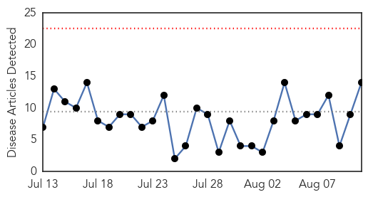
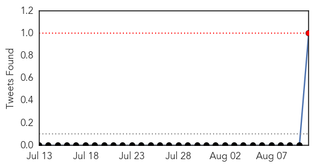
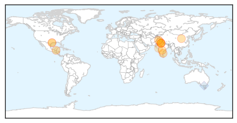
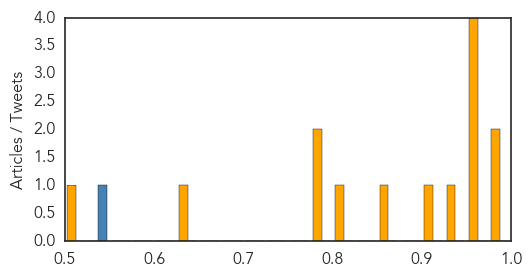

West Nile Virus
30-Day Web Trend
0 alerts, 0 warnings

30-Day Twitter Trend
0 alerts, 0 warnings

Article Locations

Article Confidences

Top Articles:
- 0.997
- Waushara County reports first case of West Nile
- 0.939
- Mosquito season can bring diseases
- 0.939
- Protect Yourself From West Nile Virus With These ‘5 Ds’
- 0.930
- 4 new human cases of West Nile virus in Mississippi
- 0.928
- Diseases prompt caution from Wyoming State Veterinary Laboratory director
- 0.792
- West Nile Virus Found in Greenwich Mosquitoes
Top Tweets:
- 0.616
- Flavivirus news: West Nile virus discovered in Md. mosquitoes - WTOP: WTOPWest Nile virus disco... http://t.co/kxoyim8lJO pathogenposse
Dengue Fever
30-Day Web Trend
0 alerts, 0 warnings

30-Day Twitter Trend
1 alerts, 0 warnings

Article Locations
Article Confidences
Top Articles:
- 0.987
- Health officials fight potential for cholera
- 0.985
- Despite dry, hot weather, dengue cases spike
- 0.975
- Steps Taken To Contain Outbreak Of Dengue Enquired By Telangana Health Minister
- 0.970
- Steps taken for prevention of gastroenteritis, acute watery diarrhoea
- 0.967
- Officials step up vector control operations after dengue death in Chennai
- 0.957
- With dengue on rise, Ludhiana hospitals become top choice for nearby cities
- 0.930
- Shaanxi province anthrax outbreak affects 19: Chinese media
- 0.914
- Three-year-old dies of dengue, cases cross 100 mark
- 0.858
- Dengue alert: No aspirin over the counter in Delhi
- 0.817
- Dengue kills 3-year-old
- 0.792
- Can America cope with a resurgence of tropical disease?
- 0.777
- Why Are We Letting Infectious Diseases Make A Comeback?
- 0.644
- Dengue downs Diamond City
- 0.518
- Delhi Govt Bans Over-The-Counter Sale Of Aspirin, Disprin, Brufen Without Prescription
Top Tweets:
- 0.655
- Flavivirus news: Dengue in Gujarat: AMC reports 730 confirmed cases, no deaths - The Indian Exp... http://t.co/ZIJfHjZtBm pathogenposse
- 0.538
- RT: Project presentations dengue malaria leptospirosis influenza chagas noncommunicabledisease climatehealthBrazil htt…